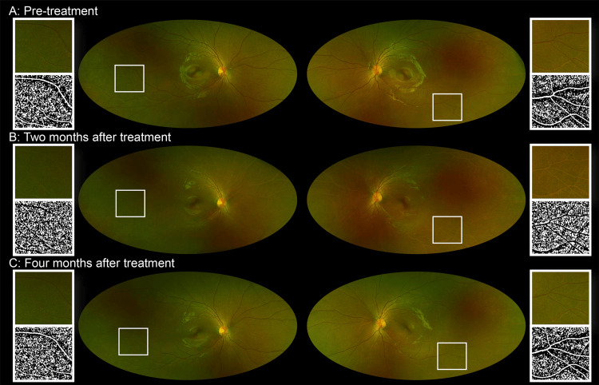
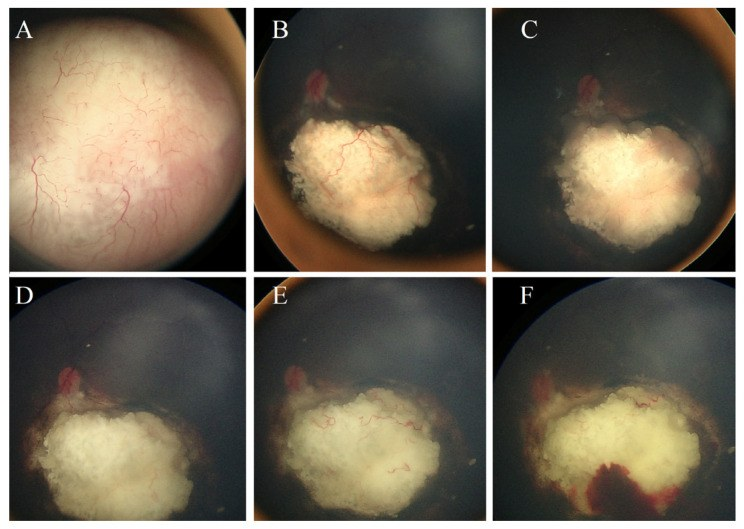
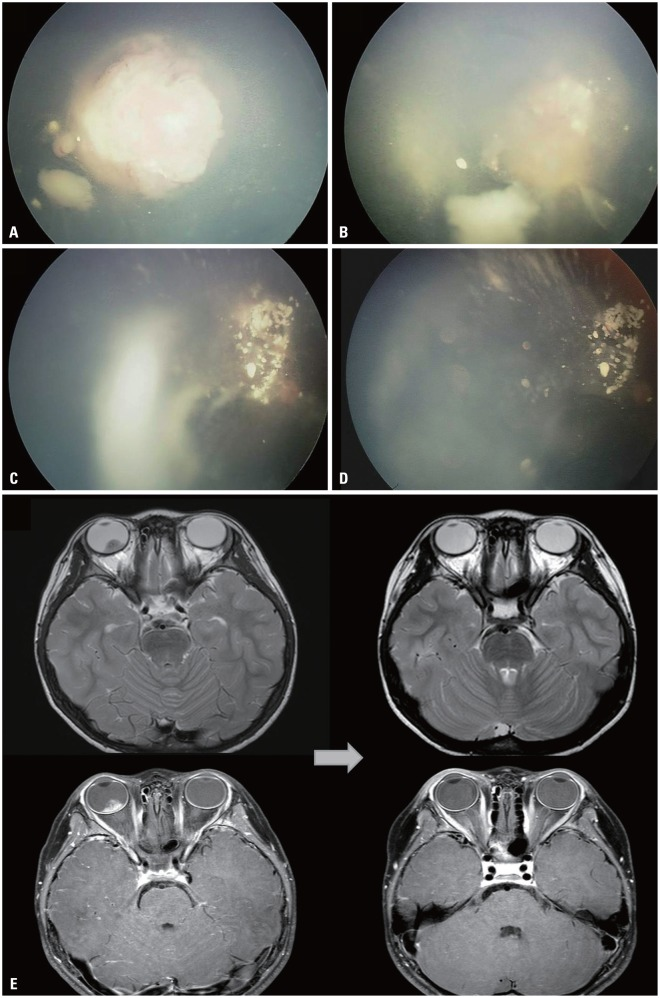
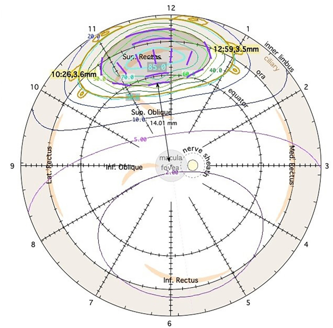

1419 — Bệnh võng mạc do xạ ở TRẺ sau xạ trị u não/retinoblastoma: ngưỡng liều, lịch OCT/OCTA, phân biệt tái phát u với biến chứng xạ / Pediatric radiation retinopathy after radiotherapy for brain tumors or retinoblastoma
Tags: pattern:vi-mach-tac pattern:phu-hoang-diem pattern:xuat-huyet-vong-mac pattern:teo-vong-mac pattern:tai-phat-u vung:vong-mac vung:hoang-diem vung:dia-thi vung:mat protocol:OCT-OCTA protocol:UWF protocol:EUA protocol:anti-VEGF score:ICRB
Mức chắc chắn (certainty): tổng hợp y văn (literature synthesis) — đọc toàn văn loạt 30 mắt trẻ sau xạ toàn bộ bằng bevacizumab, loạt 20 mắt retinoblastoma đặt plaque I-125, một ca 11 tuổi sau xạ 23,4 Gy, tổng quan hệ thống về liều–tần suất, và các loạt xạ trị retinoblastoma. Không có RCT riêng cho trẻ; phần “ngưỡng liều theo tuổi” là suy luận (inference) từ sinh học mô đang phát triển + dữ liệu liều–thể tích, đã ghi rõ tại chỗ.
Vì sao bài này quan trọng: bài 1409 viết bệnh võng mạc do xạ ở người lớn với ngưỡng 45–55 Gy vào ≥ 1/2 võng mạc. Trẻ khác ở ba điểm quyết định: (1) mắt còn lớn dần nên cùng một liều chiếu vào thể tích tương đối lớn hơn; (2) trẻ không tự báo mờ mắt — bệnh chỉ được thấy khi chủ động chụp; (3) sau xạ trị retinoblastoma, một tổn thương mới có thể là TÁI PHÁT U chứ không phải biến chứng xạ — nhầm hai hướng này dẫn tới xạ lại/enucleation oan hoặc bỏ sót u. Bài này là bài “đọc đúng thì cứu mắt, đọc sai thì mất mắt” ở trẻ.
1. Tổng quan bệnh học – cơ chế hình ảnh – vì sao trẻ không giống người lớn
1.1. Cùng một chuỗi bệnh học, nhưng “liều sinh học” khác
- Bệnh học: tia ion hóa gây đứt sợi đôi DNA ở nội mô mao mạch và pericyte → mất dần giường mao mạch, huyết khối vi mạch, thiếu máu, tăng VEGF, phá vỡ hàng rào máu–võng mạc (Clin Ophthalmol 2021, PMC8436254; J Clin Med 2026, PMC13608844). Ở trẻ, mô đích đang tăng sinh và đang mọc mạch nên cùng một liều có thể để lại tổn thương mạch máu lớn hơn về tỷ lệ thể tích — đây là suy luận sinh học, không phải con số đã đo.
- Vì sao trẻ có thể phản ứng ở liều thấp hơn ngưỡng người lớn: ca 11 tuổi sau xạ 23,4 Gy/13 phân liều (1,8 Gy/lần) cho u mầm tuyến yên có trắng mạch máu võng mạc ngoại vi hai bên sau 2 tháng, OCTA vẫn có dòng chảy, thị trường bình thường, và tự hết sau 2 tháng (Cureus 2025, PMC11973395). Đây không phải bệnh võng mạc do xạ điển hình (không thiếu máu, không phù, không tân mạch) — nhưng chứng minh mạch máu trẻ phản ứng ở liều thấp và có thể hồi phục, nên không được đốt laser vội.
- Vì sao liều theo phân liều quan trọng hơn tổng liều: với α/β = 2 Gy cho tổn thương mạch muộn, BED₂ = nd(1 + d/2):
- 40 Gy / 20 lần × 2 Gy → BED₂ = 40 × (1 + 1) = 80 Gy₂;
- 23,4 Gy / 13 lần × 1,8 Gy → BED₂ = 23,4 × (1 + 0,9) = 44,5 Gy₂.
- Nghĩa là 23,4 Gy chia nhỏ vẫn “nhẹ” hơn 40 Gy chuẩn, dù cùng nằm trong “vùng liều thấp”; ngược lại, một liều lớn mỗi lần làm BED₂ tăng nhanh — đây là lý do các phác đồ trẻ dùng 1,8–2 Gy/lần.
1.2. Ngưỡng định lượng đã có (và chỗ còn trống)
| Tình huống | Liều / con số | Kết quả định lượng | Nguồn |
|---|---|---|---|
| Xạ ngoài cho retinoblastoma (truyền thống) | 40–50 Gy, 1,8–2 Gy/lần | Nhóm được chọn có 30 mắt đều có phù hoàng điểm do xạ; CST 511 → 389 µm (2 tháng) → 263 µm (2 năm) | Villegas 2026 (PMID 42004668) |
| Xạ ngoài liều thấp hơn | < 36 Gy | Báo cáo có kiểm soát u, ít di chứng hơn — nhưng kiểm soát tại chỗ thấp hơn | Yonsei Med J 2015 (PMC4630033) |
| Plaque I-125 ở trẻ (RB kháng trị) | Liều đỉnh 45 Gy | Bệnh võng mạc do xạ 15% (3/20); đục thể thủy tinh 35%; xuất huyết u 30%; bong võng mạc 20%; glôcôm tân mạch 5%; giữ mắt 70%; theo dõi trung bình 36 tháng | J Clin Med 2025 (PMC11901221) |
| Xạ toàn bộ/trường não–đầu cổ (mọi lứa tuổi) | < 50 Gy | Không ca bệnh võng mạc do xạ trong tổng quan; 6,0% bệnh võng mạc, 2,0% bệnh thần kinh thị; gộp chung 3,8% | Cancers 2023 (PMC10093581) |
| Trẻ 11 tuổi, u mầm tuyến yên | 23,4 Gy / 13 lần | Trắng mạch ngoại vi hai bên sau 2 tháng, OCTA có dòng, tự hết sau 2 tháng | Cureus 2025 (PMC11973395) |
| Dự phòng bằng anti-VEGF (người lớn) | — | Giảm bệnh hoàng điểm do xạ OR 0,50 (0,34–0,74); giảm bệnh thần kinh thị OR 0,62 | Clin Ophthalmol 2023 (PMC10577260) |
| Điều trị anti-VEGF ở trẻ sau xạ | Bevacizumab 1,25 mg, treat-and-adjust 6 tuần | 8,2 mũi năm 1; 7,6 mũi năm 3; 5,9 mũi năm 5; CST 511 → 263 µm lúc 2 năm | Villegas 2026 (PMID 42004668) |
- Chỗ còn trống (phải nói rõ): không có ngưỡng liều riêng cho trẻ được xác lập bằng nghiên cứu tiến cứu. Ngưỡng 45–55 Gy là của người lớn; trẻ có thể có thay đổi mạch máu ở liều thấp hơn nhưng phần lớn là thoáng qua. Vì vậy không hạ ngưỡng can thiệp, chỉ hạ ngưỡng theo dõi.
1.3. Vì sao “phát hiện sớm” lại quan trọng hơn ở trẻ
- Trẻ không mô tả được triệu chứng: nhìn mờ một mắt bị bỏ qua cho tới khi lác hoặc nhược thị xuất hiện. Ở trẻ còn trong “cửa sổ nhược thị”, vài tháng phù hoàng điểm có thể để lại mất thị lực vĩnh viễn dù sau đó phù hết.
- Không có “triệu chứng vàng” nào thay cho OCT: loạt 30 mắt cho thấy phù có thể dao động qua nhiều năm (điều trị tới năm 5), nên lịch chụp định kỳ là công cụ duy nhất.
- Tiên lượng phụ thuộc tế bào quang thụ, không phụ thuộc độ dày: cùng nguyên tắc CEA đã nêu ở bài 1418 — EZ còn nguyên thì còn hồi phục; EZ đứt/teo RPE thì hết phù vẫn mất thị lực.
2. Mẫu hình + chẩn đoán phân biệt theo thời gian và theo “u hay không u” (Gamut)
2.1. Gamut theo thời điểm sau xạ
- Trong xạ – vài tuần: phản ứng viêm cấp, phù đĩa thị nhẹ, có thể trắng mạch máu thoáng qua (như ca 23,4 Gy).
- 2–6 tháng: trắng mạch ngoại vi, xuất huyết nhỏ, phù hoàng điểm sớm; đây là cửa sổ can thiệp sớm nhất.
- 6 tháng–3 năm: bệnh võng mạc do xạ điển hình — phù nang, xuất tiết cứng, vi phình mạch, vùng không tưới máu, tân mạch.
- > 3–5 năm: teo võng mạc–hắc mạc, teo đĩa thị, glôcôm tân mạch, đục thể thủy tinh, xuất huyết dịch kính; ở trẻ còn nguy cơ u thứ hai trong trường xạ.
2.2. Gamut theo hình thái — “CHILD”
- C — Cataract (đục thể thủy tinh do xạ): giảm thị lực từ từ, không phù; che mất đáy mắt → phải B-scan.
- H — Hemorrhage (xuất huyết võng mạc/dịch kính): do mạch máu xạ tổn thương hoặc tân mạch; phân biệt với xuất huyết trong u.
- I — Ischemia (vùng không tưới máu): FA/OCTA thấy mất tín hiệu mao mạch; có thể dẫn tới tân mạch.
- L — Leakage (phù hoàng điểm): dấu hiệu chữa được và là mục tiêu điều trị chính.
- D — Disc (bệnh thần kinh thị do xạ): phù đĩa thị, xuất huyết quanh đĩa; khác với phù đĩa do tăng áp lực nội sọ hoặc xâm lấn u.
2.3. Câu hỏi số 1 ở trẻ sau xạ RB: “tổn thương mới là U hay là XẠ?”
- U tái phát: khối đặc, dày lên, có thể hạt giống dịch kính (vitreous seeds), tăng kích thước theo tháng, ngấm thuốc trên MRI, không đáp ứng corticoid.
- Biến chứng xạ: phù nang, xuất huyết rải rác, trắng mạch, teo võng mạc–hắc mạc, không có khối đặc mới, ổn định hoặc tự hết theo thời gian.
- Bẫy nguy hiểm: xuất huyết sau xạ tại vị trí u đã thoái triển có thể trông như tái phát; loạt trẻ đặt plaque cho thấy xuất huyết u 30%, thường trong 6 tháng đầu, và tự hết trong 6 tháng ở ca được mô tả (J Clin Med 2025, PMC11901221).
3. Bảng so sánh phân biệt (ma trận đối chiếu)
| Thực thể (entity) | Hình ảnh/lâm sàng điển hình | Chốt vào (rule-in) | Chốt loại (rule-out) | Gợi ý xác nhận |
|---|---|---|---|---|
| Bệnh võng mạc do xạ ở trẻ | Tiền sử xạ 40–50 Gy hoặc plaque 45 Gy; phù nang, xuất huyết, trắng mạch, telangiectasia; không có khối đặc mới | Phù nang + tổn thương mạch máu khớp bản đồ liều, không có khối đặc; CST ≥ 300 µm | Khối đặc dày lên → tái phát u; chỉ trắng mạch không thiếu máu → phản ứng thoáng qua | SD-OCT cầm tay; UWF; OCTA; B-scan |
| Tái phát retinoblastoma | Khối đặc mới/tái phát, hạt giống dịch kính, có thể xuất huyết; tăng kích thước | Tăng kích thước trên B-scan qua 3–6 tháng; ngấm thuốc trên MRI; hạt giống mới | Không thay đổi kích thước + phù nang khớp vùng xạ → biến chứng xạ | B-scan 10–20 MHz; MRI não–hốc mắt; hội chẩn ung thư nhi |
| Trắng mạch máu thoáng qua sau xạ liều thấp | Trẻ 11 tuổi, 23,4 Gy/13 lần; trắng mạch ngoại vi 2 tháng, OCTA có dòng, thị trường bình thường | OCTA còn dòng chảy + tự hết trong 2 tháng | Mất tín hiệu dòng chảy/OCTA → thiếu máu thật | OCTA 15 × 15 mm; thị trường; chụp lại 2 tháng |
| Xuất huyết sau xạ tại u đã thoái triển | Xuất huyết tại vị trí u cũ, thường ≤ 6 tháng sau plaque/PBT; không có khối mới | Xuất huyết tự hết trong 6 tháng, không có khối đặc mới | Khối đặc + hạt giống → tái phát | So ảnh màu + B-scan qua 3–6 tháng |
| Bệnh hoàng điểm do xạ | Phù nang trung tâm, CST ≥ 300 µm, có thể dịch dưới võng mạc | Nang + dày trung tâm hoàng điểm, không có khối u | Dịch trên u/khối đặc → tái phát/u hoạt động | SD-OCT; so bản đồ liều |
| Bệnh thần kinh thị do xạ | Phù đĩa thị, xuất huyết quanh đĩa, giảm thị lực sớm; thường liều > 50 Gy vào đĩa | Phù đĩa + tổn thương khớp liều, không có khối u ở đĩa | Phù đĩa hai bên + tăng áp lực nội sọ → tìm nguyên nhân khác | MRI; OCT RNFL/GCL; so sánh hai mắt |
| Glôcôm tân mạch sau xạ | Nhãn áp cao, tân mạch mống mắt/góc, có thể sau xuất huyết dịch kính | Tân mạch góc + IOP cao | IOP bình thường, không tân mạch → loại trừ | Soi góc; IOP; FA |
| Đục thể thủy tinh do xạ | Mờ dần, không đau, đáy mắt khó thấy | Đục TTT khớp vùng xạ, không có khối sau TTT | Đục + khối sau TTT → phải B-scan loại trừ u | Đèn khe; B-scan |
| Coats-like exudative response sau xạ | Xuất tiết cứng nhiều, bong thanh dịch, telangiectasia; có thể giống Coats | Xuất tiết cứng + telangiectasia trong vùng xạ | Vôi hóa/khối đặc ở trẻ < 5 tuổi → nghĩ RB, không phải Coats | FA; B-scan; OCT |

Chuỗi ảnh siêu rộng (ultra-widefield SLO) trước xạ (A), 2 tháng (B) và 4 tháng (C) sau xạ 23,4 Gy/13 lần. Ở (B) có trắng mạch ngoại vi hai bên — trông như vùng không tưới máu — nhưng OCTA vẫn có dòng chảy, thị trường bình thường, và (C) tự hết. Đây là cạm bẫy “đốt laser trên mạch còn sống”. Nguồn: Cureus 2025 (PMC11973395) Fig. 1, CC BY 4.0.4. Protocol chụp – điều trị – theo dõi ở trẻ
4.1. Khung khám và chụp
- Khám dưới mê (EUA) là chuẩn ở trẻ nhỏ: soi đáy mắt gián tiếp + ảnh siêu rộng (RetCam/Optos) + SD-OCT cầm tay + B-scan 10–20 MHz; thêm UBM nếu nghi tổn thương thể mi/góc.
- Lịch gợi ý (khung thực hành, không phải guideline duy nhất): mỗi 3 tháng trong 2 năm đầu, mỗi 6 tháng tới 5 năm, hằng năm sau đó; bất kỳ giảm thị lực, lác mới, hoặc tổn thương mới → khám ngay.
- OCT/OCTA: ưu tiên OCT cấu trúc (phát hiện phù, đứt EZ, teo RPE) ở mọi lần khám; OCTA khi trẻ hợp tác hoặc khi cần phân biệt trắng mạch do thiếu máu thật với phản ứng thoáng qua. Ở trẻ nhỏ, OCT cầm tay dưới mê cho cấu trúc tốt hơn OCTA.
- MRI não–hốc mắt theo phác đồ ung thư (không thay thế OCT): dùng khi nghi tái phát/xâm lấn, hoặc tổn thương không giải thích được bằng đáy mắt.
4.2. Điều trị
- Anti-VEGF là bước đầu khi có phù hoàng điểm: bevacizumab 1,25 mg nội nhãn, treat-and-adjust khởi đầu 6 tuần, giãn dần khi khô. Loạt trẻ sau xạ cho thấy 8,2 mũi năm 1, 7,6 mũi năm 3, 5,9 mũi năm 5, CST 511 → 263 µm lúc 2 năm.
- Điều trị sớm hơn cho kết cục tốt hơn: tổng quan “bài học” của Finger nhấn mạnh can thiệp trước khi có tổn thương tế bào quang thụ, không chờ thị lực giảm (Eye 2023, PMC10050069).
- Corticoid nội nhãn: dùng thận trọng ở trẻ — nguy cơ tăng nhãn áp, đục thể thủy tinh, và chưa có dữ liệu lớn ở trẻ; chỉ cân nhắc khi kháng anti-VEGF và đã loại trừ nhiễm trùng/tái phát. Quy tắc chọn implant giống bài 1418, nhưng ngưỡng theo dõi IOP phải dày hơn.
- Laser: PRP cho vùng thiếu máu có tân mạch; không đốt vùng chỉ “trắng mạch” mà OCTA còn dòng.
- Đục thể thủy tinh: phaco + IOL khi ảnh hưởng thị lực/theo dõi; luôn B-scan trước để loại trừ u sau thể thủy tinh.
4.3. Lưu đồ quyết định
flowchart TD
A[Trẻ sau xạ trị u não hoặc retinoblastoma] --> B[EUA + UWF + OCT cầm tay mỗi 3 tháng]
B --> C{Có phù hoàng điểm CST ≥300 µm?}
C -->|Không| D{Có khối đặc mới hoặc hạt giống?}
D -->|Có| E[Tái phát u: B-scan, MRI, hội chẩn ung thư nhi]
D -->|Không| F[Theo dõi tiếp; khám 3–6 tháng]
C -->|Có| G{Loại trừ tái phát: B-scan + so bản đồ liều}
G -->|Tái phát| E
G -->|Không| H[Bevacizumab 1,25 mg treat-and-adjust 6 tuần]
H --> I{Đáp ứng sau 3 mũi?}
I -->|Có| J[Giãn khoảng, theo dõi tới 5 năm]
I -->|Không| K[Cân nhắc corticoid nội nhãn + theo dõi IOP sát]
K --> L{Có tân mạch hoặc thiếu máu nặng?}
L -->|Có| M[PRP vùng thiếu máu; không đốt mạch còn dòng]
L -->|Không| N[Tiếp tục theo dõi cấu trúc]
4.4. Ngưỡng theo dõi nhãn áp và thị lực
- IOP: đo mỗi lần khám; sau tiêm corticoid tuần 1, tháng 1–2–3; ngưỡng can thiệp ≥ 25 mmHg hoặc tăng ≥ 10 mmHg so nền (giống bài 1418, áp dụng thận trọng hơn ở trẻ).
- Thị lực: đo theo tuổi (Teller, Cardiff, HOTV, Snellen); ghi cả hai mắt vì nhược thị là biến chứng thầm lặng.
- Khúc xạ: đo mỗi 6–12 tháng; sẹo/xạ vùng hoàng điểm có thể gây cận thị/lệch khúc xạ → đeo kính + che mắt nếu nhược thị.
5. Biến thể bình thường và cạm bẫy
- Cạm bẫy 1 — “trắng mạch = thiếu máu = phải laser”: ca 23,4 Gy cho thấy OCTA còn dòng, tự hết sau 2 tháng. Chỉ đốt khi có tân mạch hoặc vùng không tưới máu thật trên FA/OCTA.
- Cạm bẫy 2 — “xuất huyết mới = tái phát”: xuất huyết sau plaque/PBT có thể xuất hiện tháng 5–6, tự hết, không kèm khối đặc; chụp lại 3–6 tháng thay vì xạ lại/enucleation ngay.
- Cạm bẫy 3 — bỏ sót u sau đục thể thủy tinh: đục TTT do xạ tiến triển nhanh; nếu không thấy đáy mắt, B-scan là bắt buộc trước khi kết luận “chỉ đục TTT”.
- Cạm bẫy 4 — quên mắt đối bên: anti-VEGF có hấp thu hệ thống; đã có ca mắt không tiêm cũng cải thiện (người lớn sau xạ — PMC4617700). Ở trẻ, điều này càng lý do để theo dõi cả hai mắt và không nhầm là “đáp ứng tự nhiên”.
- Cạm bẫy 5 — nhược thị: phù hoàng điểm kéo dài trong cửa sổ nhược thị gây mất thị lực vĩnh viễn dù phù hết; phải phối hợp kính + che mắt.
- Cạm bẫy 6 — u thứ hai trong trường xạ: ở trẻ RB1, một khối mới sau nhiều năm có thể là u thứ hai, không phải tái phát RB; cần MRI + hội chẩn ung thư, không tự xạ lại.
- Cạm bẫy 7 — áp ngưỡng người lớn cho trẻ: < 50 Gy không loại trừ thay đổi mạch máu ở trẻ (ca 23,4 Gy), nhưng cũng không chứng minh mọi trẻ cần điều trị ở liều thấp. Theo dõi, không can thiệp mù.
6. Tự lượng giá — Blind Quiz
Ca 1 — Bé gái 11 tuổi, u mầm tuyến yên, xạ 23,4 Gy/13 lần. Sau 2 tháng khám định kỳ, đáy mắt hai bên có vùng trắng mạch ngoại vi. Bé nhìn tốt, không than phiền.
- Câu hỏi: đây là bệnh võng mạc do xạ hay phản ứng thoáng qua? Cần làm gì ngay? Có đốt laser không?
Bấm để hiện đáp án
- Phản ứng thoáng qua, không phải thiếu máu: OCTA còn dòng chảy, thị trường bình thường; tổn thương tự hết sau 2 tháng (ảnh C).
- Không đốt laser. Kế hoạch: chụp lại OCTA sau 2 tháng, theo dõi thị lực/thị trường; nếu xuất hiện mất tín hiệu dòng hoặc tân mạch mới cân nhắc can thiệp.
- Bài học: liều 23,4 Gy vẫn có thể gây thay đổi mạch máu ở trẻ, nhưng không đồng nghĩa bệnh võng mạc do xạ.
- Nguồn ảnh: Cureus 2025 (PMC11973395) Fig. 1, CC BY 4.0.
Ca 2 — Bé gái 2 tuổi, retinoblastoma nhóm D mắt trái, đặt plaque I-125 liều đỉnh 45 Gy sau khi thất bại hóa trị. Sáu tháng sau, xuất huyết tại vùng u đã thoái triển, không có khối mới.

- Câu hỏi: xuất huyết này là tái phát hay biến chứng xạ? Theo dõi thế nào? Khi nào mới xạ lại?
Bấm để hiện đáp án
- Biến chứng xạ (xuất huyết sau xạ), không phải tái phát: không có khối đặc mới; xuất huyết tự hết dần trong 6 tháng, và sau 2 năm không có hoạt động u.
- Theo dõi: B-scan + ảnh màu mỗi 3 tháng; chỉ xạ lại khi có khối đặc dày lên/hạt giống mới.
- Bối cảnh: trong loạt 20 mắt đặt plaque I-125 45 Gy, xuất huyết u 30%, bệnh võng mạc do xạ 15%, giữ mắt 70%.
- Nguồn ảnh: J Clin Med 2025 (PMC11901221) Fig. 1, CC BY 4.0.
Ca 3 — Bé trai 5 tuổi, retinoblastoma một mắt, xạ proton. Ảnh dưới là trước xạ và sau xạ 2 tuần – 3 tháng; MRI trước/sau.

- Câu hỏi: đâu là dấu hiệu đáp ứng điều trị? Cần chụp gì để loại trừ tái phát về sau? Vì sao phải theo dõi tới khi trưởng thành?
Bấm để hiện đáp án
- (A) Trước xạ: khối nội sinh che cực sau + hai khối vệ tinh; (B) đã nhận 23,4 Gy trong liệu trình: khối chính thoái triển; (C) 2 tuần; (D) 3 tháng: ổn định. MRI trước/sau: khối trong nhãn cầu mất sau xạ.
- Loại trừ tái phát: B-scan + MRI định kỳ; bất kỳ khối đặc mới/hạt giống → hội chẩn ung thư.
- Theo dõi lâu dài vì: bệnh võng mạc do xạ muộn, đục thể thủy tinh, glôcôm, nhược thị, và ở trẻ RB1 còn nguy cơ u thứ hai trong trường xạ.
- Nguồn ảnh: Yonsei Med J 2015 (PMC4630033) Fig. 5, CC BY-NC 4.0 — nguyên bản.
Ca 4 — Bản đồ liều của một trẻ đặt plaque Pd-103 cho retinoblastoma ngoại vi; u cách đĩa thị 3,6 mm, hoàng điểm ở trung tâm bản đồ.

- Câu hỏi: nhìn đường đồng liều, yếu tố nào quyết định nguy cơ bệnh võng mạc do xạ? Có thể “tránh” hoàng điểm bằng cách nào?
Bấm để hiện đáp án
- Nguy cơ phụ thuộc liều tại hoàng điểm và khoảng cách u–hoàng điểm/đĩa thị, không chỉ liều đỉnh u. Plaque càng gần hoàng điểm, đường đồng liều thấp càng bao lấy hoàng điểm.
- “Tránh” bằng chọn vị trí đặt plaque, notch, hướng mắt (gaze), và liều đỉnh — như ca 8 tuổi đặt Pd-103 47,4 Gy/5 ngày, u cách đĩa 3,6 mm, theo dõi 19 năm vẫn 20/20, không tái phát.
- Không có ngưỡng an toàn tuyệt đối cho trẻ; giảm liều vào hoàng điểm là mục tiêu của lập kế hoạch.
- Nguồn ảnh: Am J Ophthalmol Case Rep 2022 (PMC9254334) Fig. 4, CC BY-NC-ND 4.0 — nguyên bản, không crop/ghép.
Bài liên quan chéo
- 1409 – Bệnh võng mạc do xạ sau xạ trị u nội nhãn/hốc mắt (người lớn, ngưỡng 45–55 Gy, BED)
- 1418 – Phù hoàng điểm do xạ dai dẳng: chọn implant corticoid (bước tiếp khi kháng anti-VEGF)
- 412 – U trong nhãn cầu (vôi hóa, chẩn đoán phân biệt RB)
- 413 – PFV/PHPV dây xơ thể thủy tinh (khối trắng ở trẻ, không vôi hóa)
- 460 – Can thiệp mắt (tiêm nội nhãn, theo dõi sau can thiệp)
- 442 – OCT trong glôcôm (theo dõi RNFL sau xạ)
Không dùng để chẩn đoán độc lập khi chưa có người hướng dẫn.